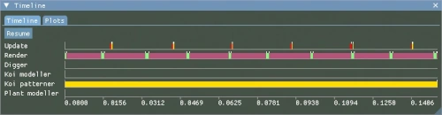
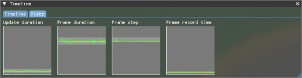
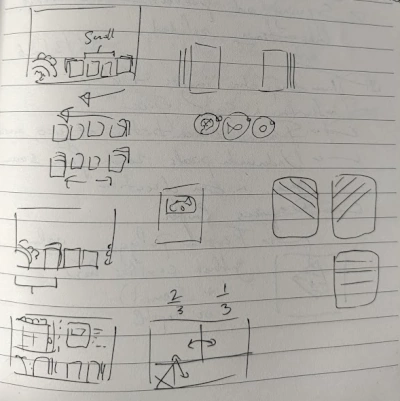

At the start of this month, I've fixed a large number of bugs that have been on my radar for a while, and I've restructured some systems to make them simpler and more robust.
For a while, the game loop wasn't implemented very nicely. The game loop is the code that makes sure the game produces sixty frames per second (or whatever your monitor supports), while also updating the game at a constant rate. This can be a challenge, because both these frequencies can vary wildly on different systems, and motion across frames still needs to look smooth.
Koi farm 2 uses multithreading in many ways. Modern devices have processors with many cores, and it'd be a shame if the game lags because it tries to do everything on one core while the others are idle, which is a common performance bottleneck for modern games. The game runs on three thread categories:

The image shows thread activity. Left is the most recent work, this shifts to the right as time progresses.
Updates and rendering don't interfere with each other. This is great for performance. Imagine you have thousands of koi in the world, but your refresh rate is much higher than the games update rate (which is 41Hz at the moment). In that case, an update can take several frames before synchronizing and moving on to the next one. By running updates and rendering on different threads, your framerate can still be high while either thread can use 100% of a CPU core before things start to slow down, and neither are slowed down by background work like procedural generation.

The only time the main threads meet is during synchronization (the red bars), which need to happen after every update, but never while a frame is still rendering, because it could overwrite data that's currently being sent to the GPU. After every update, the update thread waits until no frame is rendering, it blocks the render thread temporarily while synchronizing, after which both threads may continue.
The second image shows plots that highlight another problem the game loop needs to tackle: time measurements and frequency measurements are inherently inaccurate. The GPU is a separate piece of hardware from the CPU, and while I can time things very accurately on the CPU, the GPU is doing its own thing, and it's not telling me precisely what's going on. The render thread interpolates between updates: a koi moves from position A to position B between two updates, and the frames between the updates interpolate from A to B. At high refresh rates, there may be many frames between every set of updates. The interpolation between these updates should progress smoothly.
The second plot in the image however shows the duration of each frame that I measure, and it's not a smooth line. On some GPUs, it's even rougher. If I interpolate according to those frame times, motion becomes choppy. If I take the rolling median of frame duration, it will stabilize around the actual monitor refresh rate. This is a number I can never get directly, but I can still find out what it is by keeping plenty of measurements and observing them. The third plot shows the actual interpolation step size between frames, which is now very flat, as it should be.
The small spike in interpolation step size can be explained: sometimes the render thread predicts that it's interpolating between states A and B, while state C is already synchronized. I'm only storing two states, so that means it needs to step slightly ahead to interpolate between states B and C instead.

It's also high time to implement the card system, which will be the backbone of the entire interface. In Koi Farm 1, koi can be turned into cards and vice versa, and cards can be stored for later use. Collecting koi with specific properties as cards would unlock more challenges, and cards can be exchanged with other players.
Koi farm 2 will build on this system in several ways:
The game now also runs in fullscreen mode, and it can be paused at any time. The Wwise audio engine now builds with the game, so we can soon start adding the first sound effects with the audio designer.